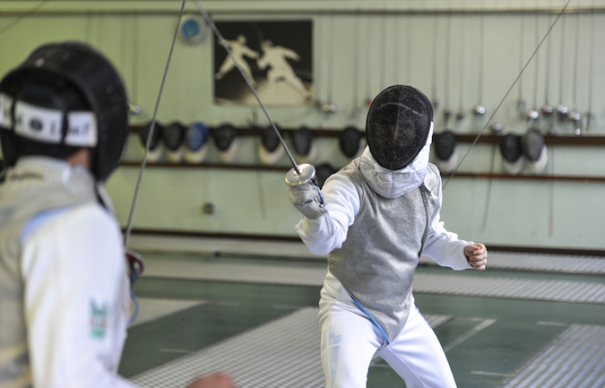

Fencing Singapore (formerly known as "Amateur Fencing Association of Singapore") is the national governing body for the sport of fencing. By actively participating in international competitions, organising international events and promoting the sport to more youths, Fencing Singpore raises the profile of the sport and aims to achieve medals at the highest levels of global competition.
Local Fencing Competitions

Fencing Singapore organises various local fencing competitions which are targeted at all levels. They also partner with MOE schools to organise the National School Games for the schools that have fencing as a CCA. Some examples of local competitions are the Singapore Junior Challenge, Singapore Senior Championships, and the Novices Challenge.
Singapore at the Olympics
Two Singaporean fencers represented Singapore in the 2020 Toyko Olympics. Kiria Tikanah fenced in the Women's Épee and Amita Berthier fenced in the Women's Foil event. Unfortunately, both of them did not advance past the round of 32. Tikanah lost to Romanian Ana Maria Popescu, while Berthier lost to the United States' Lee Keifer